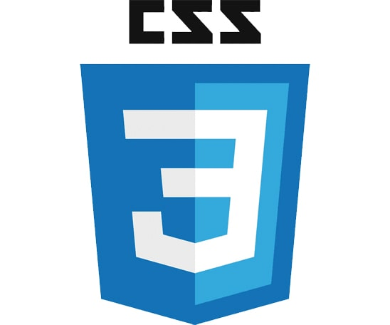
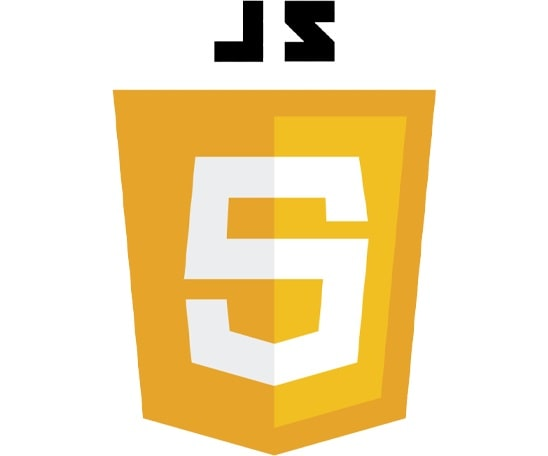

Front - End
Front - End
Caracteristicas
La programación es del lado del cliente
Tiene interacción directa con el usuario
Tecnologías base del Front - End


Para ser un desarrollador web debes tener múltiples conocimientos, los cuales te presentamos a continuación
La programación es del lado del cliente
Tiene interacción directa con el usuario
La programación es del lado del servidor
Se da la logia del negocio
Se ve la seguridad y el rendimiento del sitio web
No es estrictamente Web
Conecta el Front - Ent con el Back – End
El Back - End controla los datos en APIs de tipo REST
El Front - End controla los datos en APIs de tipo GraphQL
Cumple con los roles de la DBA
Es un gestor de versiones que permite a muchos programadores trabar en un proyecto de una manera fluida
La unión de cambios en un proyecto por parte de muchos programadores se llama Merge
Se busca la integración entre el código y la infraestructura
Dev - El código de los programadores
Ops - Infraestructura
Nos permite utilizar diversos lenguajes en el navegador y permite compilar estos lenguajes